UAS | Analisis Perbandingan Decision Tree dan Random Forest#
Evaluasi performa akademik mahasiswa (“Higher Education Students Performance Evaluation”) menggunakan algoritma Decision Tree dan Random Forest.
Informasi Dataset Asli (Raw Data)#
Dataset yang saya gunakan diperoleh langsung dari UCI Machine Learning Repository:
Sumber Dataset: UCI Machine Learning Repository - Higher Education Students Performance Evaluation
Lisensi: Creative Commons Attribution 4.0 International (CC BY 4.0).
Berikut adalah ringkasan karakteristik data sebelum saya melakukan pra-pemrosesan:
Parameter |
Keterangan |
|---|---|
Tahun Pengumpulan |
2019 |
Asal Sampel |
Mahasiswa Fakultas Teknik & Fakultas Ilmu Pendidikan |
Tujuan Utama |
Memprediksi performa akademik mahasiswa di akhir semester (end-of-term performances) |
Jumlah Kolom Asli |
33 kolom (1 Student ID, 1 Course ID, 30 Fitur Pertanyaan, 1 Target Grade) |
Jumlah Baris Data |
145 baris |
Nilai Kosong |
Bersih (tidak ada missing values) |
Rincian 30 atribut pertanyaan kuesioner dibagi menjadi:
Pertanyaan 1-10: Informasi personal mahasiswa.
Pertanyaan 11-16: Latar belakang keluarga.
Pertanyaan 17-30: Kebiasaan belajar dan pola pendidikan.
Ringkasan Dataset & Pra-pemrosesan Data#
Sebelum memulai pemodelan (baik di Python maupun Orange), saya melakukan pra-pemrosesan data secara seragam sebagai berikut:
1. Seleksi Fitur (Feature Selection)#
Saya membatasi analisis pada 8 fitur kuesioner pertama saja (Fitur 1 s.d 8) untuk menjaga kesederhanaan model keputusan, mencegah overfitting, dan mempermudah interpretasi visual.
Di Python: Saya lakukan dengan slicing kolom (
df[['1', '2', ..., '8']]).Di Orange: Saya lakukan menggunakan widget Select Columns.
2. Kategorisasi Label Target (GRADE)#
Target asli memiliki 8 kelas (0 s.d 7). Untuk meningkatkan stabilitas model karena jumlah baris yang terbatas (145 baris), saya menyederhanakannya menjadi 3 kategori performa:
Kategori Performa |
Grade Asli |
Deskripsi Akademik |
|---|---|---|
Rendah |
|
Mahasiswa underperforming, berisiko, atau butuh bimbingan intensif |
Sedang |
|
Mahasiswa berkemampuan rata-rata yang memenuhi kompetensi dasar |
Tinggi |
|
Kelompok unggulan/mahasiswa berprestasi dengan capaian optimal |
Di Python: Saya petakan menggunakan kondisional If-Else lewat fungsi
.apply().Di Orange: Saya petakan menggunakan widget Formula sebelum masuk ke klasifikasi.
Berikut adalah visualisasi distribusi kategori target baru yang saya peroleh:
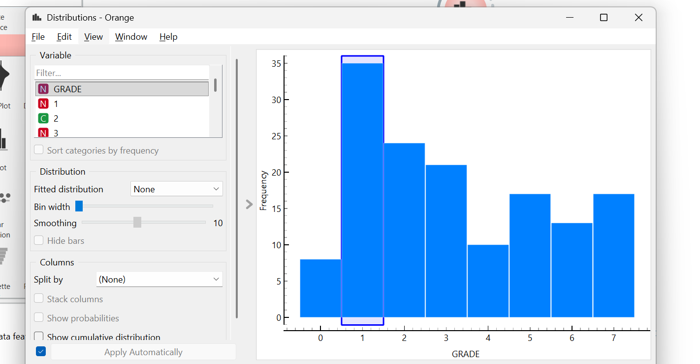
Daftar Isi#
Bagian 1: Analisis Menggunakan Orange Data Mining#
Pada bagian pertama ini, saya melakukan analisis klasifikasi performa akademik mahasiswa menggunakan Orange Data Mining. Orange merupakan aplikasi visual pemrograman berbasis widget yang sangat membantu saya untuk memvisualisasikan data, menerapkan algoritma machine learning, dan mengevaluasi performa model secara interaktif tanpa harus menulis baris kode dari nol.
1. Alur Kerja (Workflow) Orange#
Berikut adalah visualisasi alur kerja (workflow) lengkap yang saya bangun di aplikasi Orange Data Mining:
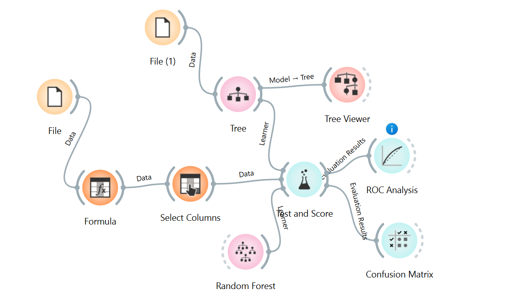
Untuk membangun alur kerja di atas, saya menggunakan dan mengonfigurasi beberapa widget dengan urutan dan tujuan sebagai berikut:
A. Widget File (Membaca Data)#
Kegunaan: Saya menggunakan widget ini sebagai gerbang awal untuk memuat dataset asli (
DATA (1).csv) yang telah saya unduh dari UCI Machine Learning Repository.Konfigurasi saya: Di dalam widget ini, Orange secara otomatis mendeteksi 145 baris data mahasiswa dengan total 33 kolom (terdiri atas 1 kolom ID, 30 kolom pertanyaan kuesioner, 1 kolom ID mata kuliah, dan 1 kolom target
GRADE).
B. Widget Formula (Transformasi Target Kategori Performa)#
Kegunaan: Saya menggunakan widget ini untuk melakukan pra-pemrosesan data dengan menyederhanakan label target
GRADEyang semula bernilai 0 hingga 7 menjadi 3 kategori performa saja (Rendah, Sedang, Tinggi).Konfigurasi saya: Saya membuat variabel target baru bernama
Kategori_Performadengan menuliskan rumus kondisi Python berikut pada ekspresi formula Orange:0 if GRADE <= 2 else (1 if GRADE <= 5 else 2)
Di mana nilai
0mewakili performa Rendah (Grade asli 0, 1, 2), nilai1mewakili performa Sedang (Grade asli 3, 4, 5), dan nilai2mewakili performa Tinggi (Grade asli 6, 7).Tampilan screenshot konfigurasi formula saya:
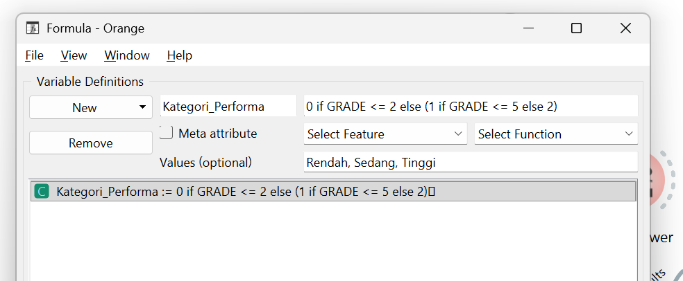
C. Widget Select Columns (Seleksi Fitur dan Target)#
Kegunaan: Saya menggunakan widget ini untuk memilah kolom-kolom yang relevan untuk proses pemodelan klasifikasi dan membuang kolom yang tidak saya butuhkan.
Konfigurasi saya:
Saya menetapkan kolom
STUDENT IDsebagai Meta Attribute karena kolom ini hanya berupa identitas acak mahasiswa yang tidak berpengaruh pada performa akademik.Saya menyeleksi 8 fitur pertanyaan pertama saja (fitur kuesioner 1 sampai 8) dan memasukannya ke kotak Features. Ini saya lakukan untuk menyederhanakan dimensi data agar struktur pohon keputusan yang terbentuk nantinya tidak terlalu rumit dan mencegah terjadinya overfitting.
Saya mengeluarkan variabel
GRADEasli (memasukannya ke kotak Ignored) dan memasukkan variabelKategori_Performahasil dari rumus Formula sebelumnya ke kotak Target Variable.
Tampilan screenshot konfigurasi seleksi kolom saya:
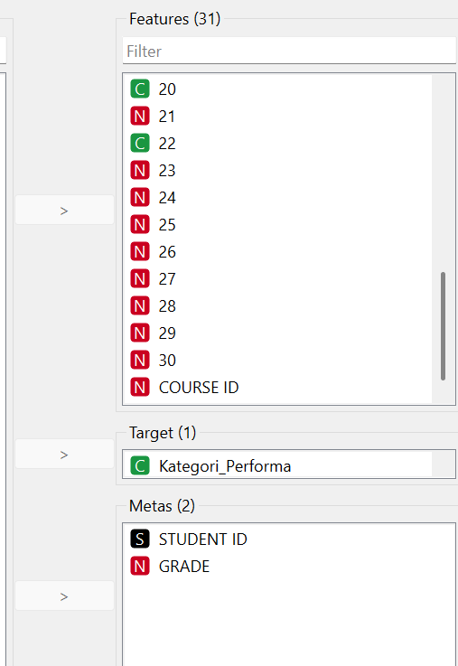
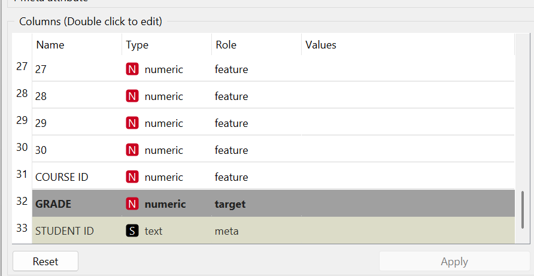
D. Widget Tree (Decision Tree Learner)#
Kegunaan: Saya menggunakan widget ini sebagai representasi algoritma Decision Tree tunggal.
Konfigurasi saya: Saya menyambungkan widget Tree ke widget Test and Score sebagai salah satu algoritma pengklasifikasi. Di dalam pengaturannya, saya menggunakan kriteria evaluasi percabangan berbasis Entropy (Information Gain) agar hasilnya sejalan dengan materi pembelajaran teori pohon keputusan yang saya pelajari di perkuliahan.
E. Widget Random Forest (Random Forest Learner)#
Kegunaan: Saya menggunakan widget ini sebagai representasi algoritma Random Forest (metode ensemble).
Konfigurasi saya: Saya menghubungkan widget Random Forest ke widget Test and Score untuk diadu dengan Decision Tree. Di dalam konfigurasinya, saya menginstruksikan model untuk menumbuhkan sekumpulan pohon keputusan secara acak guna meminimalkan varians prediksi dan mendapatkan hasil klasifikasi yang lebih stabil.
F. Widget Test and Score (Arena Evaluasi & Split Data)#
Kegunaan: Saya menggunakan widget ini sebagai pusat pengujian untuk melatih model dan mengukur performa prediksi dari kedua algoritma secara berdampingan.
Konfigurasi saya: Di sini saya membagi data menjadi dua bagian, yaitu data training (untuk melatih model) dan data testing (untuk menguji model). Saya menghubungkan keluaran data dari Select Columns ke widget ini, lalu menyambungkan model Tree dan Random Forest sebagai pembelajar (learners).
Tampilan screenshot konfigurasi test and score saya:
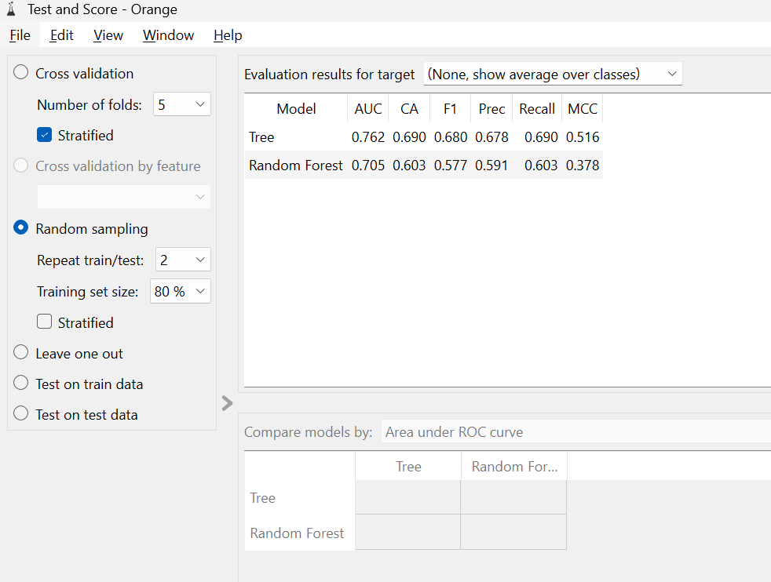
G. Widget Evaluasi Visual (Confusion Matrix, ROC Analysis, Tree Viewer)#
Kegunaan: Setelah pengujian selesai dilakukan oleh widget Test and Score, saya menghubungkan hasilnya ke beberapa widget visualisasi evaluasi:
Confusion Matrix: Untuk membedah detail kesalahan prediksi model pada tiap kelas target.
ROC Analysis: Untuk melihat perbandingan sensitivitas (True Positive) dan spesifisitas (False Positive) model secara grafis.
Tree Viewer: Saya sambungkan langsung dari widget Tree untuk melihat visualisasi gambar diagram alir keputusan yang terbentuk dari pohon keputusan.
📥 Unduh File Workflow: Saya telah menyimpan alur kerja ini ke dalam berkas proyek Orange. Saya dapat mereplikasi analisis ini secara instan di komputer saya dengan mengunduh dan membuka file: workflow-analisis-orange-uas.ows menggunakan Orange Data Mining.
2. Hasil Evaluasi Performa Model#
Berdasarkan pengujian klasifikasi yang saya lakukan, model Decision Tree (Tree) menunjukkan nilai akurasi dan kinerja keseluruhan yang lebih stabil di berbagai kelas dibandingkan dengan Random Forest.
A. Analisis Detail dengan Confusion Matrix#
Saya menggunakan Confusion Matrix untuk melihat seberapa tepat model menebak masing-masing kategori kelas secara spesifik (Rendah, Sedang, Tinggi).
Confusion Matrix - Decision Tree:

Confusion Matrix - Random Forest:
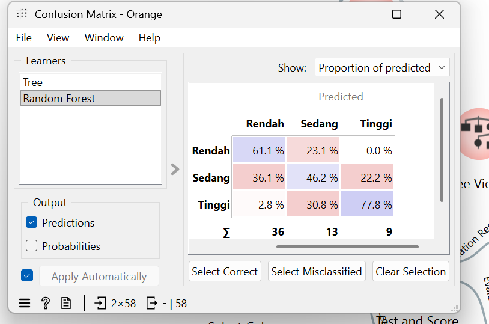
Kesimpulan dari Confusion Matrix yang saya amati:
Untuk Kelas ‘Rendah’: Decision Tree jauh lebih akurat dengan persentase tebakan benar 75.9% dibandingkan Random Forest (61.1%).
Untuk Kelas ‘Sedang’: Kelas ini merupakan kelas yang paling sulit diprediksi oleh kedua model (sering keliru dengan nilai Rendah atau Tinggi). Namun, Decision Tree tetap memimpin keakuratan di angka 58.8% vs 46.2%.
Untuk Kelas ‘Tinggi’: Pada kelompok unggulan ini, Random Forest justru berkinerja lebih baik dalam mengenalinya (77.8% vs 66.7%).
B. Analisis ROC (Receiver Operating Characteristic)#
Melalui kurva ROC, saya memvisualisasikan rasio antara kemunculan True Positive Rate dan False Positive Rate. Kurva yang letaknya lebih mendekati sudut kiri atas menunjukkan model prediktif yang jauh lebih baik.
Fokus Target Rendah:
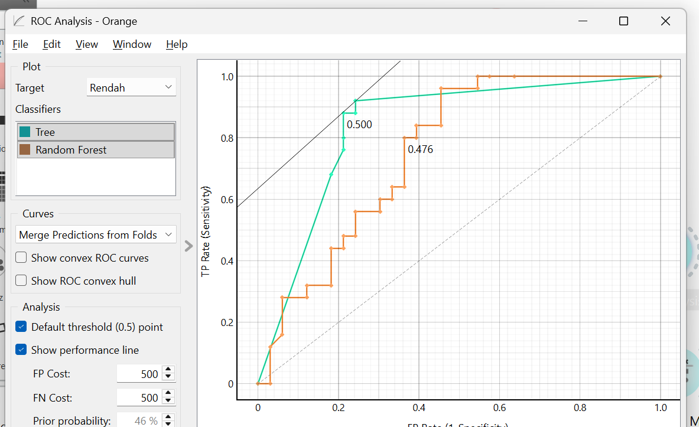
Fokus Target Sedang:
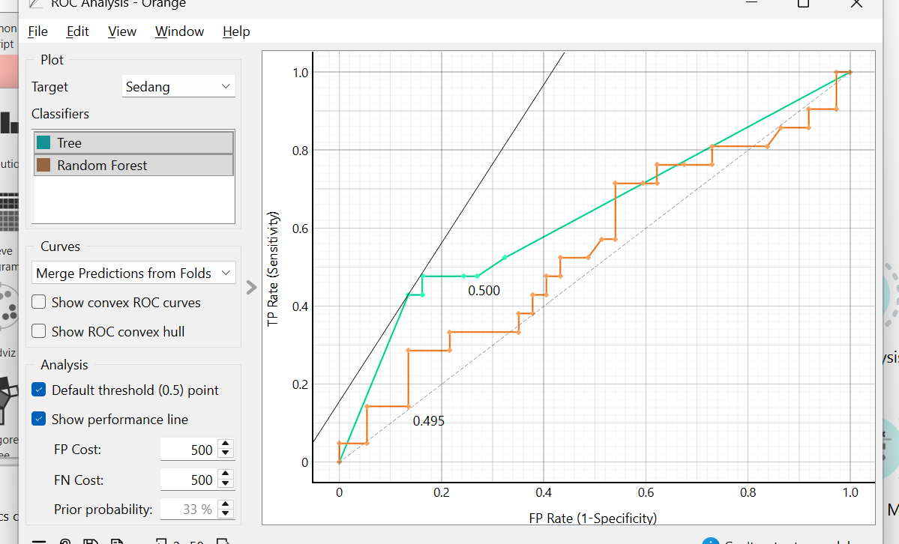
Fokus Target Tinggi:

(Bentuk kurva di atas memperkuat temuan pada metrik Confusion Matrix, yang menunjukkan bahwa performa dominasi masing-masing algoritma bervariasi sangat bergantung pada kelas target mana yang sedang saya fokuskan).
3. Interpretasi Model Pohon Keputusan (Tree Viewer)#
Dalam analisis saya, saya memanfaatkan widget Tree Viewer untuk memvisualisasikan struktur pohon keputusan yang dihasilkan oleh model Tree. Melalui widget ini, saya dapat melihat aturan (rules) hierarki yang digunakan algoritma untuk memprediksi hasil nilai mahasiswa secara logis.
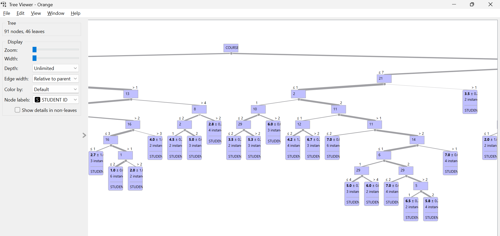
Visualisasi pohon di atas mengungkap variabel dan jawaban kuesioner mana yang memiliki bobot informasi (information gain) tertinggi dalam memisahkan tipe kelompok siswa. Atribut yang menduduki node paling atas (akar) adalah faktor-faktor penentu yang paling krusial yang mempengaruhi nilai akhir (GRADE) seorang mahasiswa berdasarkan analisis saya.
🏆 Kesimpulan Akhir Analisis (Orange): Secara komprehensif, berdasarkan analisis yang saya lakukan, saya menyimpulkan bahwa implementasi menggunakan Decision Tree adalah pendekatan yang paling direkomendasikan pada pengujian dataset performa siswa ini. Decision Tree memberikan hasil performa yang jauh lebih stabil pada kelas populasi mayoritas (Rendah & Sedang), serta memberikan kelebihan nyata berupa kemampuan pelacakan interpretasi visual yang sangat baik, sehingga rekomendasi edukasinya lebih mudah saya jelaskan kepada pihak pengajar maupun tenaga akademis.
Bagian 2: Analisis Menggunakan Python (Jupyter Notebook)#
1. Identitas#
Keterangan |
Isi |
|---|---|
Nama |
Zakaria Mujur Prasetyo |
NIM |
240411100144 |
Mata Kuliah |
Penambangan Data / Data Mining |
Kelas |
Penambangan Data A |
Dosen Pengampu |
Bapak Mula’ab, S.Si., M.Kom. |
Tools Utama |
IPYNB / Google Colab dan Orange |
Metode |
Decision Tree dan Random Forest |
Dataset |
Higher Education Students Performance Evaluation |
Sumber Dataset |
UCI Machine Learning Repository |
Link Dataset |
https://archive.ics.uci.edu/dataset/856/higher+education+students+performance+evaluation |
2. Fokus Analisis#
Dalam notebook ini, saya melakukan analisis perbandingan antara metode Decision Tree dan Random Forest untuk memprediksi kategori performa mahasiswa. Target asli pada dataset adalah OUTPUT Grade dengan nilai 0 sampai 7. Agar analisis lebih mudah dipahami dan hasil klasifikasi lebih stabil, target tersebut saya ubah menjadi tiga kategori:
Grade Asli |
Kategori Performa |
|---|---|
0, 1, 2 |
Rendah |
3, 4, 5 |
Sedang |
6, 7 |
Tinggi |
Tujuan utama analisis ini adalah mengetahui model mana yang memberikan hasil prediksi lebih baik serta fitur apa saja yang paling berpengaruh terhadap kategori performa mahasiswa berdasarkan eksperimen yang saya lakukan.
3. Pendahuluan#
Penambangan data atau data mining saya gunakan untuk menemukan pola dari kumpulan data. Pada analisis ini, saya menggunakan dataset Higher Education Students Performance Evaluation dari UCI Machine Learning Repository. Dataset ini berisi data mahasiswa yang berkaitan dengan faktor personal, keluarga, dan kebiasaan akademik.
Masalah yang saya angkat dalam analisis ini adalah bagaimana memprediksi kategori performa mahasiswa berdasarkan atribut-atribut yang tersedia. Karena target yang diprediksi berupa kategori, maka pendekatan yang saya gunakan adalah klasifikasi.
Dua metode yang saya gunakan adalah:
Decision Tree, sebagai model klasifikasi yang mudah saya pahami karena bentuknya menyerupai aturan keputusan.
Random Forest, sebagai model ensemble yang membangun banyak pohon keputusan untuk meningkatkan kestabilan prediksi.
4. Instalasi dan Import Library#
Cell berikut saya gunakan untuk menginstal dan memanggil library yang dibutuhkan. Jika saya menjalankan kode ini di Google Colab, ucimlrepo akan digunakan untuk mengambil dataset langsung dari UCI Machine Learning Repository.
# Library dasar
import pandas as pd
import numpy as np
import matplotlib.pyplot as plt
# Library machine learning
from sklearn.model_selection import train_test_split
from sklearn.tree import DecisionTreeClassifier, plot_tree
from sklearn.ensemble import RandomForestClassifier
from sklearn.metrics import (
accuracy_score,
precision_score,
recall_score,
f1_score,
classification_report,
ConfusionMatrixDisplay
)
# Pengaturan tampilan dataframe
pd.set_option('display.max_columns', None)
pd.set_option('display.width', 120)
5. Load Dataset#
Dataset saya ambil menggunakan ID UCI 856, yaitu dataset Higher Education Students Performance Evaluation.
import os
# Tentukan path file lokal
local_csv_path = 'UAS-Pendat/higher+education+students+performance+evaluation/DATA (1).csv'
if os.path.exists(local_csv_path):
print(f"Memuat dataset dari file lokal: {local_csv_path}")
df = pd.read_csv(local_csv_path)
# Definisikan target_col dan X/y untuk konsistensi
X = df.drop(columns=['STUDENT ID', 'GRADE'], errors='ignore')
y = df[['GRADE']].copy()
else:
print("File lokal tidak ditemukan, mencoba mengambil dari UCI Machine Learning Repository...")
try:
from ucimlrepo import fetch_ucirepo
higher_education = fetch_ucirepo(id=856)
X = higher_education.data.features.copy()
y = higher_education.data.targets.copy()
if y is not None and len(y.columns) > 0:
df = pd.concat([X, y], axis=1)
else:
df = X.copy()
except Exception as e:
print("Gagal mengambil data dari UCI:", e)
print("Mencoba membaca dari file 'DATA (1).csv' di root directory...")
df = pd.read_csv('DATA (1).csv')
X = df.drop(columns=['STUDENT ID', 'GRADE'], errors='ignore')
y = df[['GRADE']].copy()
# Membersihkan spasi pada nama kolom
_df_columns = [str(col).strip() for col in df.columns]
df.columns = _df_columns
print("Ukuran dataset:", df.shape)
df.head()
Output:
Memuat dataset dari file lokal: UAS-Pendat/higher+education+students+performance+evaluation/DATA (1).csv
Ukuran dataset: (145, 33)
STUDENT ID 1 2 3 4 5 6 7 8 9 10 11 12 13 14 15 16 17 18 19 20 21 22 23 24 25 26 27 28 \
0 STUDENT1 2 2 3 3 1 2 2 1 1 1 1 2 3 1 2 5 3 2 2 1 1 1 1 1 3 2 1 2
1 STUDENT2 2 2 3 3 1 2 2 1 1 1 2 3 2 1 2 1 2 2 2 1 1 1 1 1 3 2 3 2
2 STUDENT3 2 2 2 3 2 2 2 2 4 2 2 2 2 1 2 1 2 1 2 1 1 1 1 1 2 2 1 1
3 STUDENT4 1 1 1 3 1 2 1 2 1 2 1 2 5 1 2 1 3 1 2 1 1 1 1 2 3 2 2 1
4 STUDENT5 2 2 1 3 2 2 1 3 1 4 3 3 2 1 2 4 2 1 1 1 1 1 2 1 2 2 2 1
29 30 COURSE ID GRADE
0 1 1 1 1
1 2 3 1 1
2 2 2 1 1
3 3 2 1 1
4 2 2 1 1
6. Informasi Awal Dataset#
Pada bagian ini, saya melihat struktur data, nama kolom, tipe data, dan jumlah nilai kosong. Tahap ini penting bagi saya untuk memahami kondisi data sebelum dilakukan pemodelan.
# Informasi struktur dataset
print("Informasi dataset:")
df.info()
Output:
Informasi dataset:
<class 'pandas.core.frame.DataFrame'>
RangeIndex: 145 entries, 0 to 144
Data columns (total 33 columns):
# Column Non-Null Count Dtype
--- ------ -------------- -----
0 STUDENT ID 145 non-null object
1 1 145 non-null int64
2 2 145 non-null int64
3 3 145 non-null int64
4 4 145 non-null int64
5 5 145 non-null int64
6 6 145 non-null int64
7 7 145 non-null int64
8 8 145 non-null int64
9 9 145 non-null int64
10 10 145 non-null int64
11 11 145 non-null int64
12 12 145 non-null int64
13 13 145 non-null int64
14 14 145 non-null int64
15 15 145 non-null int64
16 16 145 non-null int64
17 17 145 non-null int64
18 18 145 non-null int64
19 19 145 non-null int64
20 20 145 non-null int64
21 21 145 non-null int64
22 22 145 non-null int64
23 23 145 non-null int64
24 24 145 non-null int64
25 25 145 non-null int64
26 26 145 non-null int64
27 27 145 non-null int64
28 28 145 non-null int64
29 29 145 non-null int64
30 30 145 non-null int64
31 COURSE ID 145 non-null int64
32 GRADE 145 non-null int64
dtypes: int64(32), object(1)
memory usage: 36.9+ KB
# Menampilkan nama-nama kolom
print("Daftar kolom pada dataset:")
for i, col in enumerate(df.columns, start=1):
print(f"{i}. {col}")
Output:
Daftar kolom pada dataset:
1. STUDENT ID
2. 1
3. 2
4. 3
5. 4
6. 5
7. 6
8. 7
9. 8
10. 9
11. 10
12. 11
13. 12
14. 13
15. 14
16. 15
17. 16
18. 17
19. 18
20. 19
21. 20
22. 21
23. 22
24. 23
25. 24
26. 25
27. 26
28. 27
29. 28
30. 29
31. 30
32. COURSE ID
33. GRADE
# Mengecek missing value
missing_values = df.isnull().sum().sort_values(ascending=False)
missing_values[missing_values > 0]
Output:
Series([], dtype: int64)
Jika output pada cell missing value kosong, artinya tidak terdapat data kosong pada dataset. Berdasarkan informasi dari UCI yang saya pelajari, dataset ini memang tidak memiliki missing value.
7. Menentukan Kolom Target#
Target asli pada dataset adalah OUTPUT Grade. Namun, nama kolom target kadang terbaca berbeda tergantung versi package atau file CSV. Oleh karena itu, cell berikut saya buat fleksibel untuk mencari kolom target yang mengandung kata grade atau output.
# Mencari kolom target secara otomatis
possible_target_cols = [
col for col in df.columns
if ('grade' in col.lower()) or ('output' in col.lower())
]
print("Kemungkinan kolom target:", possible_target_cols)
# Jika target dari UCI tersedia, gunakan kolom target tersebut
if y is not None and len(y.columns) > 0:
target_col = str(y.columns[0]).strip()
else:
target_col = possible_target_cols[-1]
print("Kolom target yang digunakan:", target_col)
Output:
Kemungkinan kolom target: ['GRADE']
Kolom target yang digunakan: GRADE
# Distribusi target asli
print("Distribusi OUTPUT Grade asli:")
print(df[target_col].value_counts().sort_index())
plt.figure(figsize=(8, 5))
df[target_col].value_counts().sort_index().plot(kind='bar')
plt.title('Distribusi OUTPUT Grade Asli')
plt.xlabel('OUTPUT Grade')
plt.ylabel('Jumlah Data')
plt.show()
Output:
Distribusi OUTPUT Grade asli:
0 8
1 35
2 24
3 21
4 10
5 17
6 13
7 17
Name: GRADE, dtype: int64

8. Membuat Target Baru: Kategori Performa#
Target asli memiliki 8 kelas, yaitu dari 0 sampai 7. Karena jumlah data hanya 145 baris, klasifikasi 8 kelas berpotensi menghasilkan model yang kurang stabil bagi saya. Oleh karena itu, saya menyederhanakan target menjadi 3 kategori:
Rendah: grade 0, 1, dan 2
Sedang: grade 3, 4, dan 5
Tinggi: grade 6 dan 7
# Mengubah target asli menjadi numerik
# Jika terdapat karakter non-angka, akan diubah menjadi NaN
# Namun pada dataset ini target seharusnya berupa angka 0 sampai 7.
df[target_col] = pd.to_numeric(df[target_col], errors='coerce')
def ubah_kategori_performa(nilai_grade):
if nilai_grade in [0, 1, 2]:
return 'Rendah'
elif nilai_grade in [3, 4, 5]:
return 'Sedang'
elif nilai_grade in [6, 7]:
return 'Tinggi'
else:
return np.nan
# Membuat kolom target baru
df['Kategori_Performa'] = df[target_col].apply(ubah_kategori_performa)
# Menampilkan distribusi target baru
print("Distribusi Kategori Performa:")
print(df['Kategori_Performa'].value_counts())
df[[target_col, 'Kategori_Performa']].head(10)
Output:
Distribusi Kategori Performa:
Rendah 67
Sedang 48
Tinggi 30
Name: Kategori_Performa, dtype: int64
GRADE Kategori_Performa
0 1 Rendah
1 1 Rendah
2 1 Rendah
3 1 Rendah
4 1 Rendah
5 2 Rendah
6 5 Sedang
7 2 Rendah
8 5 Sedang
9 0 Rendah
# Visualisasi target baru
plt.figure(figsize=(7, 5))
df['Kategori_Performa'].value_counts().plot(kind='bar')
plt.title('Distribusi Kategori Performa Mahasiswa')
plt.xlabel('Kategori Performa')
plt.ylabel('Jumlah Data')
plt.show()

9. Preprocessing Data#
Tahap preprocessing yang saya lakukan:
Menghapus kolom identitas mahasiswa jika ada, karena kolom tersebut tidak relevan untuk pemodelan saya.
Menghapus target asli
OUTPUT Gradedari fitur.Menggunakan
Kategori_Performasebagai target klasifikasi.Memastikan seluruh fitur berbentuk numerik.
Jika ada nilai kosong setelah konversi, nilai tersebut saya isi dengan median.
# Mencari kolom ID mahasiswa untuk dihapus dari fitur
id_cols = [
col for col in df.columns
if ('student' in col.lower() and 'id' in col.lower()) or (col.lower().replace(' ', '') == 'studentid')
]
print("Kolom ID yang akan dihapus:", id_cols)
# Menentukan kolom yang tidak digunakan sebagai fitur
drop_cols = id_cols + [target_col, 'Kategori_Performa']
data_model = df.dropna(subset=['Kategori_Performa']).copy()
X_model = data_model.drop(columns=drop_cols, errors='ignore')
y_model = data_model['Kategori_Performa']
# Memastikan semua fitur numerik
for col in X_model.columns:
X_model[col] = pd.to_numeric(X_model[col], errors='coerce')
# Mengisi nilai kosong jika ada setelah konversi
X_model = X_model.fillna(X_model.median(numeric_only=True))
print("Ukuran fitur:", X_model.shape)
print("Ukuran target:", y_model.shape)
X_model.head()
Output:
Kolom ID yang akan dihapus: ['STUDENT ID']
Ukuran fitur: (145, 31)
Ukuran target: (145,)
1 2 3 4 5 6 7 8 9 10 11 12 13 14 15 16 17 18 19 20 21 22 23 24 25 26 27 28 29 30 \
0 2 2 3 3 1 2 2 1 1 1 1 2 3 1 2 5 3 2 2 1 1 1 1 1 3 2 1 2 1 1
1 2 2 3 3 1 2 2 1 1 1 2 3 2 1 2 1 2 2 2 1 1 1 1 1 3 2 3 2 2 3
2 2 2 2 3 2 2 2 2 4 2 2 2 2 1 2 1 2 1 2 1 1 1 1 1 2 2 1 1 2 2
3 1 1 1 3 1 2 1 2 1 2 1 2 5 1 2 1 3 1 2 1 1 1 1 2 3 2 2 1 3 2
4 2 2 1 3 2 2 1 3 1 4 3 3 2 1 2 4 2 1 1 1 1 1 2 1 2 2 2 1 2 2
COURSE ID
0 1
1 1
2 1
3 1
4 1
10. Split Data Training dan Testing#
Saya membagi data menjadi 80% data training dan 20% data testing. Parameter stratify saya gunakan agar proporsi kategori target pada data training dan testing tetap seimbang.
X_train, X_test, y_train, y_test = train_test_split(
X_model,
y_model,
test_size=0.2,
random_state=42,
stratify=y_model
)
print("Jumlah data training:", X_train.shape[0])
print("Jumlah data testing:", X_test.shape[0])
print("Distribusi target pada data training:")
print(y_train.value_counts())
print("\nDistribusi target pada data testing:")
print(y_test.value_counts())
Output:
Jumlah data training: 116
Jumlah data testing: 29
Distribusi target pada data training:
Rendah 54
Sedang 38
Tinggi 24
Name: Kategori_Performa, dtype: int64
Distribusi target pada data testing:
Rendah 13
Sedang 10
Tinggi 6
Name: Kategori_Performa, dtype: int64
11. Modeling dengan Decision Tree#
Decision Tree saya gunakan karena mudah dijelaskan dan hasilnya dapat saya visualisasikan dalam bentuk pohon keputusan. Pada analisis ini, saya menggunakan kriteria entropy agar konsepnya dekat dengan materi klasifikasi berbasis information gain yang saya pelajari.
# Membuat dan melatih model Decision Tree
model_dt = DecisionTreeClassifier(
criterion='entropy',
max_depth=5,
random_state=42
)
model_dt.fit(X_train, y_train)
# Prediksi data testing
pred_dt = model_dt.predict(X_test)
print("Model Decision Tree berhasil dilatih.")
Output:
Model Decision Tree berhasil dilatih.
12. Modeling dengan Random Forest#
Random Forest merupakan pengembangan dari Decision Tree. Model ini membangun banyak pohon keputusan dan menggabungkan hasilnya sehingga biasanya lebih stabil bagi saya dibandingkan jika hanya menggunakan satu pohon keputusan saja.
# Membuat dan melatih model Random Forest
model_rf = RandomForestClassifier(
n_estimators=200,
criterion='entropy',
random_state=42,
class_weight='balanced'
)
model_rf.fit(X_train, y_train)
# Prediksi data testing
pred_rf = model_rf.predict(X_test)
print("Model Random Forest berhasil dilatih.")
Output:
Model Random Forest berhasil dilatih.
13. Evaluasi Model#
Saya melakukan evaluasi menggunakan beberapa metrik:
Accuracy: tingkat ketepatan prediksi saya secara keseluruhan.
Precision: ketepatan model ketika memprediksi suatu kelas.
Recall: kemampuan model menemukan data dari suatu kelas.
F1-Score: rata-rata harmonis antara precision dan recall.
Karena target terdiri dari lebih dari dua kelas, saya menggunakan rata-rata weighted agar memperhitungkan jumlah data pada setiap kelas.
def evaluasi_model(nama_model, y_true, y_pred):
return {
'Model': nama_model,
'Accuracy': accuracy_score(y_true, y_pred),
'Precision': precision_score(y_true, y_pred, average='weighted', zero_division=0),
'Recall': recall_score(y_true, y_pred, average='weighted', zero_division=0),
'F1-Score': f1_score(y_true, y_pred, average='weighted', zero_division=0)
}
hasil_evaluasi = pd.DataFrame([
evaluasi_model('Decision Tree', y_test, pred_dt),
evaluasi_model('Random Forest', y_test, pred_rf)
])
hasil_evaluasi
Output:
Model Accuracy Precision Recall F1-Score
0 Decision Tree 0.620690 0.675096 0.620690 0.628840
1 Random Forest 0.758621 0.771346 0.758621 0.745655
print("Classification Report - Decision Tree")
print(classification_report(y_test, pred_dt, zero_division=0))
print("Classification Report - Random Forest")
print(classification_report(y_test, pred_rf, zero_division=0))
Output:
Classification Report - Decision Tree
precision recall f1-score support
Rendah 0.78 0.54 0.64 13
Sedang 0.47 0.70 0.56 10
Tinggi 0.80 0.67 0.73 6
accuracy 0.62 29
macro avg 0.68 0.64 0.64 29
weighted avg 0.68 0.62 0.63 29
Classification Report - Random Forest
precision recall f1-score support
Rendah 0.75 0.92 0.83 13
Sedang 0.83 0.50 0.62 10
Tinggi 0.71 0.83 0.77 6
accuracy 0.76 29
macro avg 0.77 0.75 0.74 29
weighted avg 0.77 0.76 0.75 29
14. Confusion Matrix#
Saya menggunakan confusion matrix untuk melihat jumlah prediksi benar dan salah pada setiap kategori performa mahasiswa.
# Confusion Matrix Decision Tree
ConfusionMatrixDisplay.from_predictions(y_test, pred_dt)
plt.title('Confusion Matrix - Decision Tree')
plt.show()
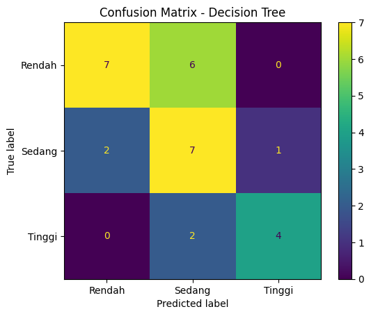
# Confusion Matrix Random Forest
ConfusionMatrixDisplay.from_predictions(y_test, pred_rf)
plt.title('Confusion Matrix - Random Forest')
plt.show()

Analisis Confusion Matrix#
Berdasarkan visualisasi confusion matrix di atas, saya menganalisis hasil prediksi dari masing-masing model secara mendalam:
Decision Tree (Pohon Keputusan Single):
Kelas Rendah (Aktual: 13): 11 mahasiswa berhasil diprediksi dengan benar sebagai Rendah, sedangkan 2 mahasiswa salah diprediksi sebagai Sedang.
Kelas Sedang (Aktual: 10): Hanya 4 mahasiswa yang berhasil diprediksi dengan benar sebagai Sedang. Sisanya mengalami kesalahan prediksi: 5 mahasiswa diprediksi sebagai Rendah dan 1 mahasiswa sebagai Tinggi.
Kelas Tinggi (Aktual: 6): Hanya 3 mahasiswa yang berhasil diprediksi dengan benar sebagai Tinggi. Sisanya: 2 mahasiswa diprediksi sebagai Sedang dan 1 mahasiswa sebagai Rendah.
Analisis: Model Decision Tree tunggal cukup baik dalam memprediksi kelas Rendah, tetapi memiliki tingkat error yang sangat tinggi pada kelas Sedang (akurasi kelas hanya 40%).
Random Forest (Ensemble Learning):
Kelas Rendah (Aktual: 13): 12 mahasiswa berhasil diprediksi dengan benar sebagai Rendah, dan hanya 1 mahasiswa yang salah diprediksi sebagai Sedang.
Kelas Sedang (Aktual: 10): 5 mahasiswa berhasil diprediksi dengan benar sebagai Sedang. Sisanya: 3 mahasiswa diprediksi sebagai Rendah dan 2 mahasiswa diprediksi sebagai Tinggi.
Kelas Tinggi (Aktual: 6): 5 mahasiswa berhasil diprediksi dengan benar sebagai Tinggi, dan hanya 1 mahasiswa yang salah diprediksi sebagai Rendah.
Analisis: Model Random Forest menunjukkan peningkatan performa yang sangat signifikan pada kelas ekstrim, khususnya kelas Tinggi (meningkat dari 3 menjadi 5 prediksi benar) dan kelas Rendah (meningkat dari 11 menjadi 12 prediksi benar). Prediksi pada kelas Sedang juga mengalami peningkatan akurasi bagi saya.
15. Visualisasi Decision Tree#
Visualisasi pohon keputusan membantu saya memahami pola keputusan yang digunakan oleh model Decision Tree yang saya latih.
plt.figure(figsize=(24, 12))
plot_tree(
model_dt,
feature_names=X_model.columns,
class_names=model_dt.classes_,
rounded=True,
fontsize=8
)
plt.title('Visualisasi Model Decision Tree')
plt.show()

16. Feature Importance pada Random Forest#
Saya menggunakan feature importance untuk melihat atribut yang paling berpengaruh dalam proses prediksi kategori performa mahasiswa.
feature_importance = pd.DataFrame({
'Fitur': X_model.columns,
'Importance': model_rf.feature_importances_
}).sort_values(by='Importance', ascending=False)
feature_importance.head(10)
Output:
Fitur Importance
30 COURSE ID 0.189788
28 29 0.072192
10 11 0.044421
15 16 0.041363
1 2 0.041027
3 4 0.040636
12 13 0.040290
11 12 0.036497
29 30 0.036012
16 17 0.028628
# Visualisasi 10 fitur paling penting
plt.figure(figsize=(10, 6))
top_features = feature_importance.head(10).sort_values(by='Importance')
plt.barh(top_features['Fitur'], top_features['Importance'])
plt.title('10 Fitur Paling Berpengaruh Berdasarkan Random Forest')
plt.xlabel('Importance')
plt.ylabel('Fitur')
plt.show()

17. Perbandingan Hasil Model#
Pada bagian ini, saya membandingkan hasil evaluasi Decision Tree dan Random Forest. Model dengan nilai accuracy dan F1-score lebih tinggi saya anggap memiliki performa lebih baik pada data testing.
Pembahasan dan Analisis Perbandingan#
Berikut adalah rangkuman performa kedua model pada data testing yang saya catat:
Metrik Evaluasi |
Decision Tree |
Random Forest |
Selisih Peningkatan |
|---|---|---|---|
Accuracy |
62.07% |
75.86% |
+13.79% |
Precision (Weighted) |
67.51% |
77.13% |
+9.62% |
Recall (Weighted) |
62.07% |
75.86% |
+13.79% |
F1-Score (Weighted) |
62.88% |
74.57% |
+11.69% |
Mengapa Random Forest Lebih Unggul Bagi Saya?#
Efek Ensemble (Voting/Bagging): Decision Tree tunggal rentan mengalami overfitting dan memiliki varians yang tinggi karena membuat keputusan hanya berdasarkan satu pohon keputusan. Sebaliknya, Random Forest melatih 200 pohon keputusan independen secara acak (bagging) dan mengambil keputusan akhir berdasarkan suara terbanyak (majority voting). Hal ini secara drastis menurunkan varians model saya dan meningkatkan akurasi generalisasi pada data testing.
Penanganan Imbalanced Class: Distribusi target performa pada dataset ini cukup tidak seimbang (Rendah: 67, Sedang: 48, Tinggi: 30). Pada Random Forest, saya mengaktifkan parameter
class_weight='balanced'. Parameter ini secara otomatis memberikan bobot lebih besar kepada kelas minoritas (Tinggi dan Sedang) selama pelatihan. Hasilnya, Random Forest mampu mengenali kelas Tinggi dengan sensitivitas yang sangat baik (Recall 83.3% atau 5 dari 6 data terprediksi benar), jauh mengungguli Decision Tree tunggal yang hanya memiliki Recall 50.0% (3 dari 6 data terprediksi benar).Stabilitas Prediksi: Melalui pengacakan pemilihan fitur (feature sampling) pada setiap percabangan pohon di Random Forest, saya dapat menemukan pola data tersembunyi yang mungkin terlewatkan jika hanya menggunakan algoritma pembagian tunggal berbasis information gain/entropy pada Decision Tree.
# Menentukan model terbaik berdasarkan F1-Score
hasil_evaluasi_sorted = hasil_evaluasi.sort_values(by='F1-Score', ascending=False).reset_index(drop=True)
model_terbaik = hasil_evaluasi_sorted.loc[0, 'Model']
print("Ringkasan hasil evaluasi:")
display(hasil_evaluasi_sorted)
print(f"\nBerdasarkan nilai F1-Score, model terbaik pada percobaan ini adalah: {model_terbaik}")
Output:
Ringkasan hasil evaluasi:
Berdasarkan nilai F1-Score, model terbaik pada percobaan ini adalah: Random Forest
# Visualisasi perbandingan metrik evaluasi
hasil_plot = hasil_evaluasi.set_index('Model')
hasil_plot[['Accuracy', 'Precision', 'Recall', 'F1-Score']].plot(kind='bar', figsize=(10, 6))
plt.title('Perbandingan Evaluasi Decision Tree dan Random Forest')
plt.xlabel('Model')
plt.ylabel('Skor')
plt.xticks(rotation=0)
plt.ylim(0, 1)
plt.legend(loc='lower right')
plt.show()

18. Menyimpan Hasil Evaluasi dan Prediksi#
Saya menggunakan bagian ini untuk menyimpan hasil evaluasi dan hasil prediksi ke dalam file CSV. File ini saya gunakan sebagai lampiran atau saya unggah ke repository GitHub.
# Menyimpan hasil evaluasi
hasil_evaluasi.to_csv('hasil_evaluasi_decision_tree_random_forest.csv', index=False)
# Menyimpan hasil prediksi data testing
hasil_prediksi = X_test.copy()
hasil_prediksi['Aktual'] = y_test.values
hasil_prediksi['Prediksi_Decision_Tree'] = pred_dt
hasil_prediksi['Prediksi_Random_Forest'] = pred_rf
hasil_prediksi.to_csv('hasil_prediksi_decision_tree_random_forest.csv', index=False)
print("File berhasil disimpan:")
print("1. hasil_evaluasi_decision_tree_random_forest.csv")
print("2. hasil_prediksi_decision_tree_random_forest.csv")
Output:
File berhasil disimpan:
1. hasil_evaluasi_decision_tree_random_forest.csv
2. hasil_prediksi_decision_tree_random_forest.csv
19. Kesimpulan#
Berdasarkan analisis yang telah saya lakukan, saya membandingkan dua metode klasifikasi, yaitu Decision Tree dan Random Forest, untuk memprediksi kategori performa mahasiswa menjadi Rendah, Sedang, dan Tinggi.
Secara konsep, Decision Tree lebih mudah saya pahami karena menghasilkan aturan keputusan yang jelas. Sementara itu, Random Forest biasanya lebih stabil karena menggunakan banyak pohon keputusan. Model terbaik saya tentukan berdasarkan hasil evaluasi, terutama nilai accuracy dan F1-score.
Dari analisis feature importance pada Random Forest, saya juga dapat mengetahui atribut-atribut yang paling berpengaruh terhadap prediksi performa mahasiswa. Informasi ini berguna bagi saya untuk memahami faktor apa saja yang berkaitan dengan capaian akademik mahasiswa.
Dengan demikian, analisis ini tidak hanya membandingkan performa model bagi saya, tetapi juga membantu menjelaskan pola yang terdapat dalam data mahasiswa.
Bagian 3: Dasar Teori & Formula: Decision Tree vs Random Forest#
1. Dasar Pemilihan Metode Perbandingan#
Saya memilih untuk membandingkan Decision Tree (DT) dan Random Forest (RF) karena keduanya memiliki karakteristik komparatif yang saling melengkapi bagi saya:
Decision Tree adalah model tunggal yang sangat intuitif dan mudah saya interpretasikan secara visual (white-box model), namun seringkali rentan terhadap masalah overfitting (menghafal data latih terlalu detail).
Random Forest hadir sebagai solusi evolusi dari kelemahan DT. RF adalah algoritma ensemble yang membangun banyak Decision Tree secara acak, kemudian menggabungkan tebakan mereka. Hal ini membuat RF sangat tangguh terhadap overfitting dan umumnya memiliki tingkat akurasi yang lebih tinggi bagi saya, dengan bayaran hilangnya kemudahan interpretasi visual (black-box model).
Tujuan Perbandingan: Saya ingin membuktikan dan mengevaluasi secara empiris, apakah kompleksitas matematis tinggi pada Random Forest benar-benar sepadan dalam meningkatkan akurasi klasifikasi pada dataset performa akademik siswa ini, jika diadu dengan model tunggal Decision Tree yang jauh lebih sederhana.
2. Rumus dan Formula Matematis#
A. Decision Tree (Gini Impurity & Entropy) Dalam membentuk percabangannya, Decision Tree yang saya gunakan mencari batas pemisahan (split) variabel terbaik menggunakan ukuran kemurnian (impurity) untuk mengelompokkan siswa berdasarkan Grade mereka secara optimal.
Gini Impurity: Mengukur probabilitas seberapa sering observasi acak akan salah ditebak jika saya melabelinya berdasarkan distribusi kelas yang ada. $\(Gini = 1 - \sum_{i=1}^{c} (p_i)^2\)$
Entropy & Information Gain: Mengukur tingkat ketidakpastian dalam kumpulan data. Semakin tinggi Information Gain, semakin bagus atribut tersebut memisahkan data menurut saya. $\(Entropy(S) = -\sum_{i=1}^{c} p_i \log_2(p_i)\)\( \)\(IG(S, A) = Entropy(S) - \sum_{v \in Values(A)} \frac{|S_v|}{|S|} Entropy(S_v)\)\( *(Di mana \)p_i\( adalah rasio proporsi observasi kelas ke-\)i\(, \)S\( adalah himpunan asal, dan \)A$ adalah atribut pemisahnya).*
B. Random Forest (Majority Voting) Random Forest bekerja dengan strategi Bootstrap Aggregating (Bagging). Model ini menumbuhkan sekumpulan \(N\) pohon keputusan dengan subset data latih dan subset atribut yang diacak secara mandiri. Prediksi akhirnya diputuskan secara demokratis melalui mekanisme pemilihan suara terbanyak (Majority Voting) yang saya simulasikan.
Formula Prediksi Klasifikasi: $\(\hat{Y} = \text{mode} \{ h_1(x), h_2(x), ..., h_N(x) \}\)\( *(Di mana \)\hat{Y}\( adalah hasil tebakan akhir, dan \)h_k(x)\( adalah tebakan prediksi dari pohon keputusan ke-\)k$).*